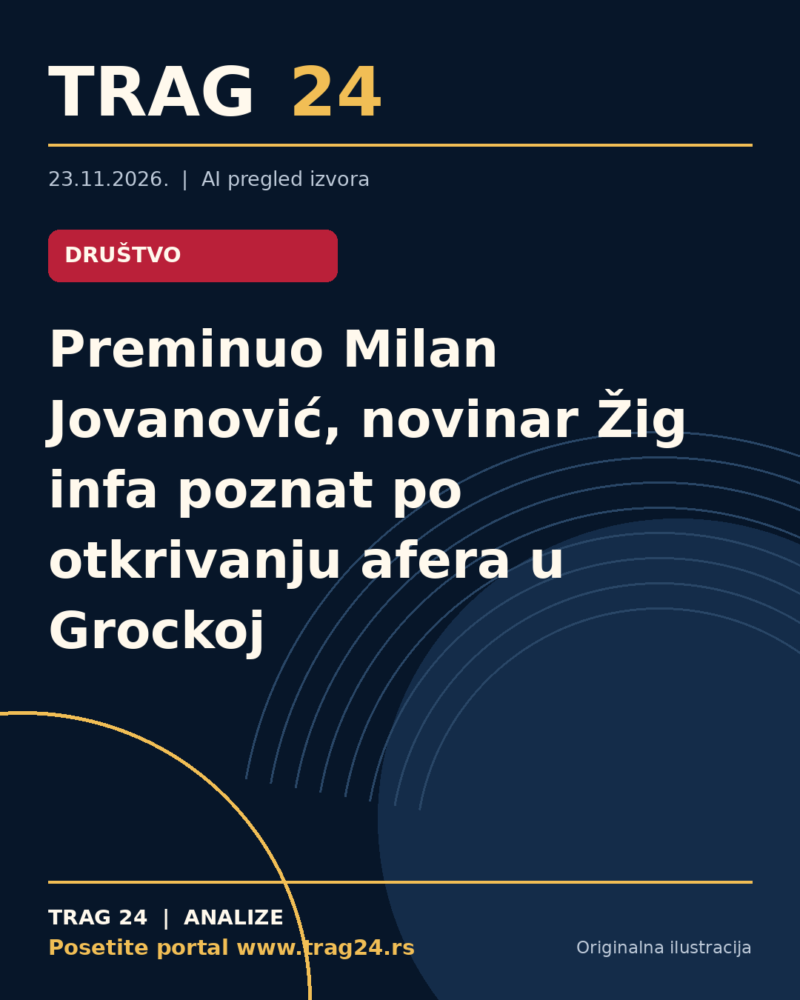

Preminuo Milan Jovanović, novinar Žig infa poznat po otkrivanju afera u Grockoj

ŠTA SE DOGODILO
Milan Jovanović, dugogodišnji novinar portala Žig info i nekadašnji policajac, preminuo je u noći između 22. i 23. novembra 2026. godine. Jovanović je bio poznat po svom istrajnom novinarskom radu, posebno u istraživanju i otkrivanju korupcije i malverzacija u opštini Grocka. Toksični dim koji je udahnuo tokom požara u njegovoj kući 2018. godine trajno je oštetio njegova pluća i doveo do zdravstvenih problema koji su uticali na njegovu smrt.
HRONOLOGIJA
Milan Jovanović rođen je 2. jula 1950. godine. Nakon 30 godina rada u policiji, penzionisan je krajem devedesetih godina, a potom je započeo karijeru novinara. U decembru 2018. godine, tokom noći, kuća mu je zapaljena u ataku koji su komplikovale lokalne vlasti, a za koji je pravosnažno osuđen bivši predsednik opštine Grocka, Dragoljub Simonović. Sudski postupci za naknadu štete još traju. Jovanović je nastavio novinarski rad do novembra 2026. godine, pišući čak i dok je bio priključen na kiseonik.
ŠTA NAVODE IZVORI
Prema Insajderu i Vremenu, Jovanović je bio poznat po hrabrom i istrajnom novinarstvu koje je često bilo usmereno direktno protiv lokalnih moćnika, posebno u Grockoj. Nije se oslanjao na glasine, već je često provodio i po 24 sata na terenu prikupljajući dokaze. Oba izvora ističu da je njegova kuća zapaljena Molotovljevim koktelima u noći između 11. i 12. decembra 2018., i da su za napad pravosnažno osuđeni počinioci, uključujući i Dragoljuba Simonovića.
ŠTA JE POTVRĐENO
Potvrđeno je da je Milan Jovanović preminuo u 77. godini, da je bio novinar i policajac u penziji, da je kuća u kojoj je živeo zapaljena u napadu 2018. godine, kao i da je za taj napad osuđena grupa ljudi uključujući bivšeg predsednika opštine Grocka. Njegov rad bio je posvećen izveštavanju o lokalnoj korupciji i kriminalu. Takođe je potvrđeno da je poslednjih godina života bio priključen na kiseonik zbog oštećenja pluća prouzrokovanih požarom.
ŠTA NIJE POTVRĐENO
Nije potvrđeno tačno medicinsko stanje koje je direktno dovelo do njegove smrti mimo podataka o oštećenju pluća. Takođe, nisu dostupne detaljnije informacije o planiranom terminu sahrane. Nije poznato da li je Jovanović doživeo kraj sudskog postupka za naknadu štete.
ŠTA OSTАJE OTVORENO: Ostaje nejasno da li će biti održana dodatna istraživanja ili komemoracije povodom njegove smrti. Takođe, nije poznato kako će smrt Milana Jovanovića uticati na dalje izveštavanje portala Žig info, kao i posledice koje će imati za lokalnu zajednicu u Grockoj u kontekstu borbe protiv korupcije.
Izvori
- https://insajder.net/prenosimo/preminuo-novinar-milan-jovanovic
- https://vreme.com/vesti/preminuo-milan-jovanovic-novinar-zig-infa-kom-je-zapaljena-kuca/
- https://www.novosti.rs/sport/fudbal/1673767/najnovije-sportske-vesti-fudbal-milan-raicevic-raja-sindjelic-smrt-preminuo
Ova analiza je pripremljena uz pomoć veštačke inteligencije na osnovu javno dostupnih izvora. Navodi izvora nisu nužno nezavisno potvrđeni.